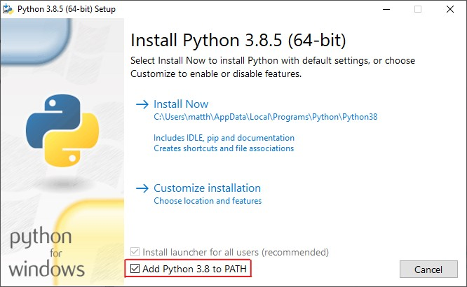

Getting Started¶
This page details how to download and install the API, as well as using the demo page.
Downloading TrainLink¶
You will need to download the files for TrainLink from the releases section of the GitHub repository. To do this you will need to go to the TrainLink repository and click on the latest release that isn’t a prerelease, unless you specifically want to use features only in that release. Finally, download the correct file for your OS (.zip for Windows, others use tar.gz) then extract it to a safe place.
Setting up the server¶
First you will need to set up the server on the computer that the BaseStation will be plugged into. To do this you need to follow the steps below:
Install Python¶
To install Python, you need to head here then download the correct version for the operating system you are using. If you are using MacOS or Linux, you can skip this stage as python is preinstalled on your OS.
Note: If you are using Windows, be sure to tick the box labled ‘Add Python to Path’ as this will enable you to use properly.
Install dependencies¶
Then, you need to open up your terminal into the root of the files you downloaded earlier and run
$ pip install -r requirements.txt
This will install all of the required pip packages needed to run the server.
Run the server¶
Thats it! All the installing is done, and all thats left to do is run server.py in the API Server folder.
However, you might want to check out the Configuring the server section on the API calls page for details on how to customise the server.